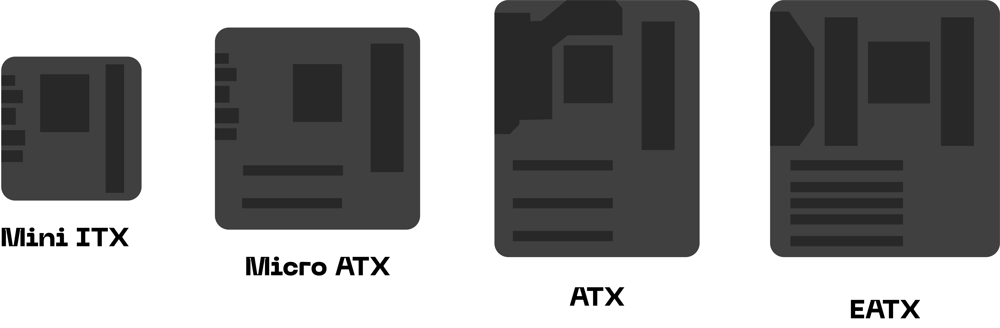

En essentiell komponent i alla datorer är moderkorten som håller samman alla andra komponenter så att den fungerar alls. En sådan komponent som moderkorten har många delar som man ofta inte tänker på som konsument, men som ändå är så fundamentala för nästan all hårdvara.
En aspekt av moderkort som är viktig att förstå för att veta mer om moderkort är deras formfaktor som påverkar både hur moderkort ser ut och fungerar. Några faktorer som påverkar moderkortens formfaktorer är:
- Processorsockel, som är exakt vad det låter som, den del på moderkortet där man sätter processorer så att den ska få elektricitet för att göra sitt syfte. Beroende vilka processorer på marknaden som finns så tillverkas olika sorters sockeltyper.
- Chipset, som består av två delar nordbryggan (northbridge) och sydbryggan (southbridge), är en del som låter CPU:n “prata” med andra delar av moderkortet.
- BIOS (Basic Input/ Output System), vilket är ett chip som kontrollerar att alla de mest basiska funktionerna fungerar, det här görs då man startar om eller sätter på datorn.
En annan viktig del av moderkort är deras bussar och hastigheten av dem, som mäts i MHz, det här är oftast mätt på FSB (Front Side Bus) vars hastighet kan påverka datorernas prestanda.
Utöver FSB så finns det en hel del olika bussar med olika uppgifter såsom “back side bus” som kopplar CPU:n till det externa cache minnet. “Memory bus” som kopplar nordbryggan till minnet (RAM). IDE eller ATA buss som de olika diskar kopplas till via sydbryggan. PCI som kopplar PCI till sydbryggan, PCI Express; PCI-E som sannerligen kommer byta ut både AGP och PCI på grund av att den är mycket snabbare.
